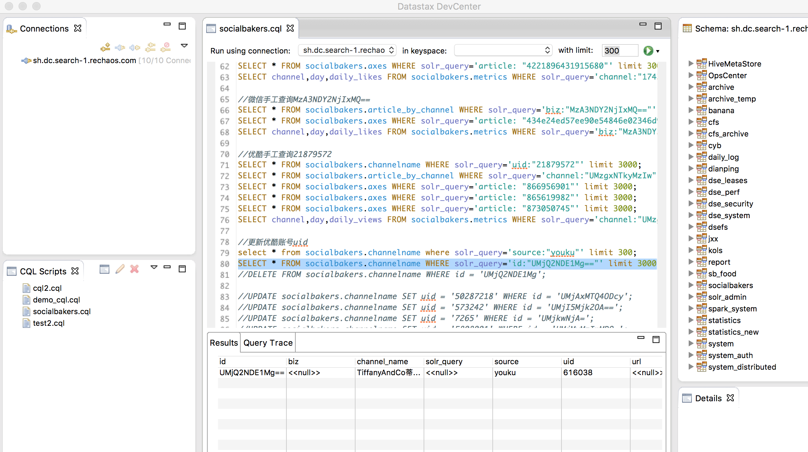

Created by 陈琦 [acking]
2018-06-12
Solr is the popular, blazing-fast, open source enterprise search platform built on Apache Lucene™.
Solr（读作“solar”）是Apache Lucene项目的开源企业搜索平台。其主要功能包括全文检索、命中标示、分面搜索、动态聚类、数据库集成，以及富文本（如Word、PDF）的处理。Solr是高度可扩展的，并提供了分布式搜索和索引复制。Solr是最流行的企业级搜索引擎，Solr 4还增加了NoSQL支持。

//常用cql查询
SELECT * FROM socialbakers.channelname where id = 'AcquadiParma_China';
//加入solr_query查询
SELECT * FROM socialbakers.channelname WHERE solr_query='id:"UMjQ2NDE1Mg=="' limit 3000;
//删除
//DELETE FROM socialbakers.channelname WHERE id = 'UMjQ2NDE1Mg';
//更新
//UPDATE socialbakers.channelname SET uid = '50287218' WHERE id = 'UMjAxMTQ4ODcy';
Thank you！